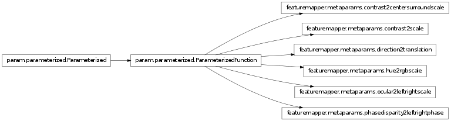

Metaparameter functions allow for the presentation of complex patterns that are coordinated across different inputs (controlled via the input name) or controlled by a higher-level parameter.
Current examples are transformations of contrast between the stimulus and the background based on a contrast parameter, which can be set to implement Michelson or Weber contrast or the coordinated presentation of input patterns to each eye, which assigns the correct input pattern based on whether an input source contains ‘left’ or ‘right’.
Bases: param.parameterized.ParameterizedFunction
Allows controlling the contrast in orientation contrast patterns, where the contrast of the central stimulus has to be set independently from the surround annulus and the background. Can be controlled with the contrast_parameter, which can be set to one of three values: ‘michelson_contrast’, ‘weber_contrast’ or simply ‘scale’.
param String contrast_parameter (allow_None=False, constant=False, default=weber_contrast, instantiate=False, pickle_default_value=True, precedence=None, readonly=False)
Bases: param.parameterized.ParameterizedFunction
Coordinates complex contrast values in single and compound patterns. To change the contrast behavior change the contrast_parameter to one of three values: ‘michelson_contrast’, ‘weber_contrast’ or simply ‘scale’.
param String contrast_parameter (allow_None=False, constant=False, default=michelson_contrast, instantiate=False, pickle_default_value=True, precedence=None, readonly=False)
Bases: param.parameterized.ParameterizedFunction
Coordinates hue between inputs with Red, Green or Blue in their name.
Bases: param.parameterized.ParameterizedFunction
Coordinates phase disparity between two eyes, by looking for the keywords Left and Right in the input names.